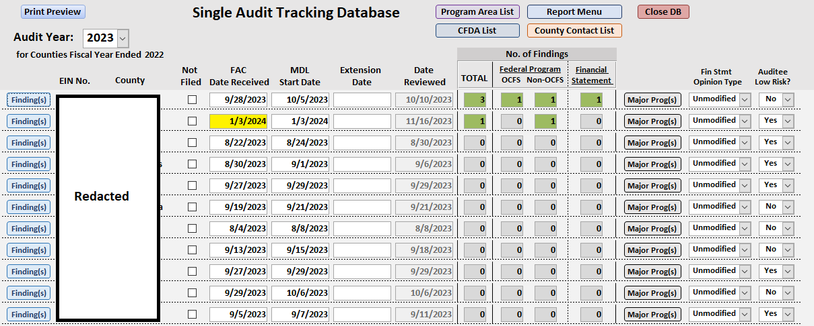

Fund Recipient
Dashboard
For this project, I created a Power BI dashboard for visualizing audit report data, providing users with real-time monitoring of submission status, findings, and management decision letter issuance. The dashboard enables trend analysis and time-based comparisons for enhanced insights.
Background
Federal regulations require state agencies to verify that each of their subrecipients has a Single Audit performed when the total amount of their federal awards expended during their fiscal year equals or exceeds $750,000 (2 CFR 200.332(f)). A subrecipient is a non-federal entity that receives a subaward from another entity to carry out part of a federal program or award. The Office of Children and Family Services (OCFS) passes through federal funds to 58 New York State counties and over 250 not-for-profit organizations as subrecipients.
Either a Single Audit report or an exemption form is required from each subrecipient. The Single Audit report must be uploaded to the Federal Audit Clearinghouse no later than nine months after the close of their fiscal year. Fiscal year ends vary for different subrecipients. If a subrecipient was not subject to the Single Audit requirement, they must submit a completed exemption form attesting they did not incur expenditure of $750,000 or more for all federal programs.
For each of the subrecipient which had a Single Audit conducted, my audit team (Audit and Quality Control of OCFS) must review the report to identify whether there were any findings pertaining to an OCFS program (e.g., Foster Care, Child Care and Development Fund, and Social Services Block Grant). Each audit finding must also have a Corrective Action Plan for OCFS to review, and then OCFS is required to issue a management decision for the finding. OCFS has 6 months to issue a Management Decision Letter (6 months from the date when the Federal Audit Clearinghouse accepts the Single Audit report). OCFS is also responsible for tracking, reviewing and issuing management decisions for two other agencies hosted by OCFS.
Essentially, the requirements about the Single Audit monitoring process described above can be broken down into two parts:
Data Source
In order to streamline the audit data entry and track the progress toward issuing management decision. Microsoft Access databases were developed by my audit team and developers from the Office of Information Technology. The databases are used to enter the Single Audit report data (publicly available from the Federal Audit Clearinghouse) and the data of the management decision issuance process. A connection was established between Power BI and the relevant tables in the databases to enable real-time tracking and reporting of information.
Submission Status Report
This report allows the user to view progress towards receiving a single audit report from each entity for a particular state fiscal year. The filter can be used to view the status in each year.
1. Stacked bar chart with card: Displays the total number of entities which have submitted a single audit (SA) report or have not submitted a SA report. Some entities tend to email Audit and Quality Control (AQC) a copy of SA report before submitting to the FAC, the number of which is reflected in “Not Submitted to FAC but Emailed a Copy”.
2. Slicer: Selects a particular state fiscal year and shows only the information related to that year.
3. Table: Shows each entity's fiscal year end date and FAC submission due date. If the submission is completed, the rest of the columns displaying information, such as the submission date and the AQC review date, will be filled up.
4. Gauge: Displays progress towards the goal of receiving submissions from at least 95% of the entities.
5. Card: Totals the number of entities.
Findings Status Report
This report shows details of OCFS findings, the progress towards issuing a Management Decision Letter for each one, as well as a summary of the severity of financial statement findings.

1. Severity of Findings (OCFS Program) Column Chart: Displays the total number of program findings by federal program name.
2. Number of Findings Per Program Column Chart: Displays the total number of program findings by federal program name.
3. Severity of Findings (Financial Statement Column Chart): Displays the total number of financial statement findings by severity.
4. OCFS Program Findings Status Table: Provides information about each OCFS program finding and the progress made towards issuing a Management Decision Letter.
Findings (All) Trends Report
This report displays different charts and graphs to visually depict information about the number, type, and severity of all findings reported on the counties' single audit reports. All findings, regardless of whether they are federal program (both non-OCFS and OCFS programs) and financial statement findings, are included in the charts. Information such as CFDA/program name(s) the findings reference and county risks is also displayed.

1. Total # of Findings by SFY Stacked Area ChartDisplays the total number of findings by year broken down into three groups: total number of relevant OCFS findings (orange), total number of financial statement findings (green), and total number of non-OCFS findings (yellow).
2. County Risk Each SFY Column Chart: Tracks the total number low risk counties each year. (please note the collection of 2023 data is still in progress)
3. # Times Program Audited vs. # Findings Table: Displays the total number of times a federal award program was audited and, of those, how many times there was a finding in the audit report.
4. Severity of Program Findings Stacked Column Chart: Displays the number of program findings for each year broken out by severity.
5. Severity of Fin. Statement Findings Stacked Column Chart: Displays the number of financial statement findings for each year broken out by severity.
Findings (Relevant) Trends Report
This report displays different charts and graphs to provide information about the OCFS program findings reported. They display the trends over the year and also the finding details of each county.

1. # of OCFS Program Audited VS. # of OCFS Program Findings Clustered Column Chart: Displays the total number of federal award programs that were audited in each SFY, and, among those, how many times there was a finding in the audit report.
2. Severity of Findings Stacked Column Chart: Displays the number of OCFS program findings for each year broken out by severity.
3. Counties with Top # of Findings Tree Map: Lists counties that have top # of OCSF program findings.
4. County Name and Audit Year Slicers: Filters the county name and audit year. The County Name Filter affects visualization 5, 6, 8, and 9, while the Audit Year Filter affects visualization 5, 6, and 8.
5. # of Findings Card: Displays the total # of OCFS program findings reported for a county in audit year.
6. FedAwardName Tree Map: Displays the names of the OCFS program that has a finding for a selected county and year.
7. Dynamic Legend Slier: Allows parameters “Finding Severity” and “Opinion” to be selected for visualization 8 and 9.
8. County Details Stacked Bar Chart: Displays the number of OCFS program findings by severity or auditor opinion for a selected county and year.
9. County Details Stacked Column Chart: Compares the number of OCFS program findings by severity or auditor opinion over the year.